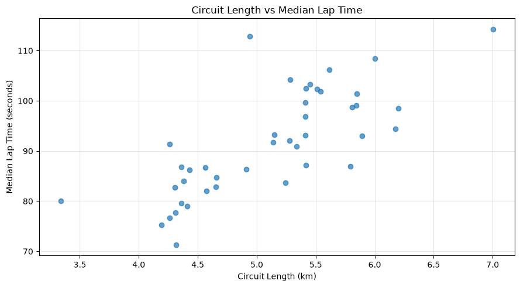
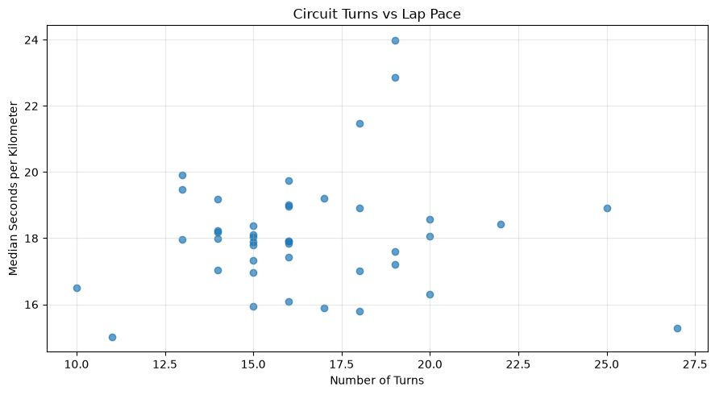
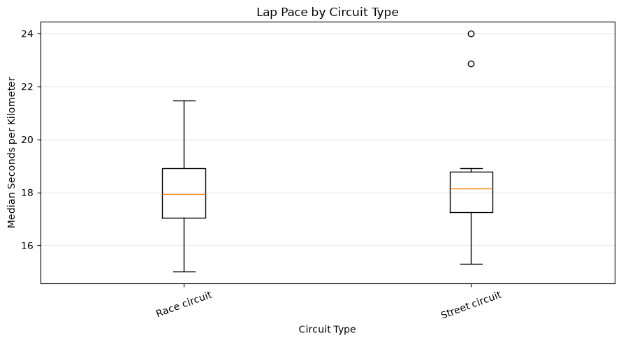
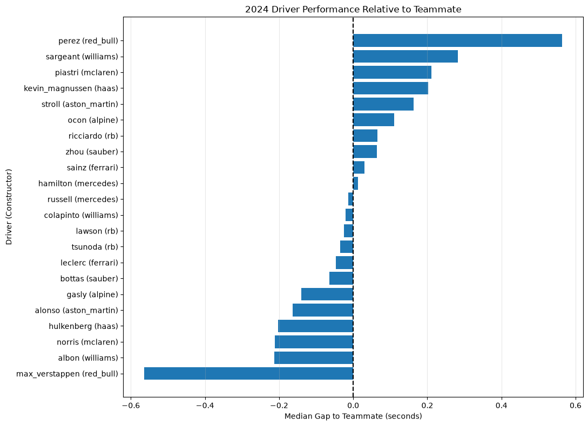
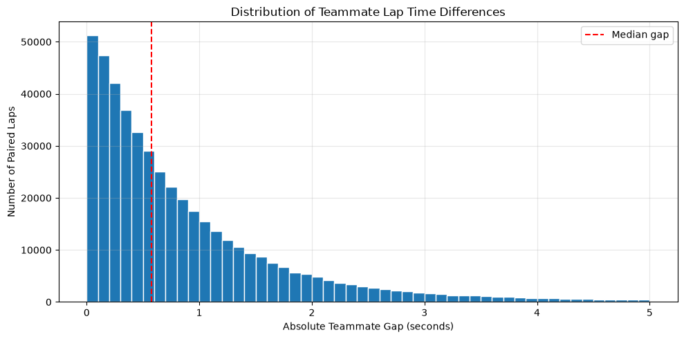
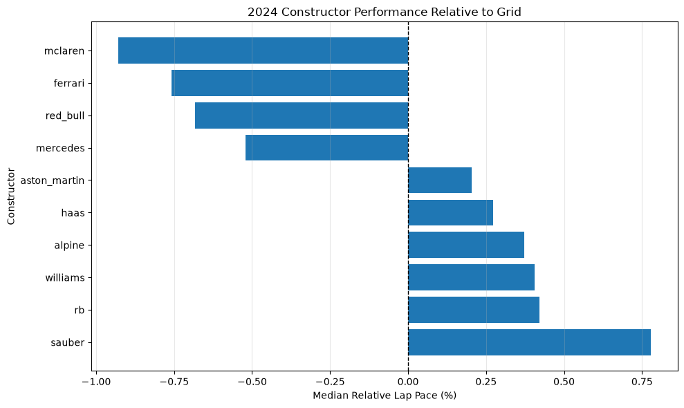
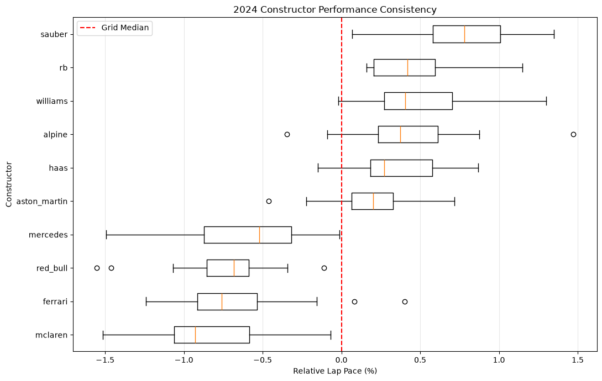
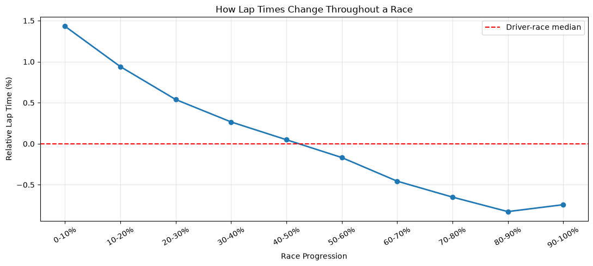

Factors Affecting Formula 1 Lap Times
Research question
What are the main factors affecting lap times in Formula 1?
Objective
Explore how lap times vary with circuit characteristics, drivers, teams, race progression, and pit stops.
Data sources
- Lap times: individual driver lap timings, converted to seconds.
- Wikipedia circuits: circuit type, length, direction, and turns.
- Race results: each driver's team for a specific race.
- Pit stops: recorded stops, available from 2011 onward.
Approach
- Load the processed datasets.
- Match circuit identifiers and merge the relevant information.
- Check unmatched records and ensure merges do not duplicate lap rows.
- Explore patterns using plots and summary statistics.
- Assess selected comparisons using statistical methods.
Limitations
Circuit layouts may change over time, so Wikipedia circuit lengths and turn counts require historical verification. Missing pit-stop data before 2011 does not mean that no stops occurred. The analysis examines associations and does not establish causation.
Show code · cell 1
from pathlib import Path
import pandas as pd
project_root = next(
(
path
for path in (Path.cwd(), *Path.cwd().parents)
if (
path / "data" / "processed" / "laps"
/ "lap_times_cleaned.csv"
).is_file()
),
None,
)
if project_root is None:
raise FileNotFoundError(
"Cannot find lap_times_cleaned.csv. "
"Export it from the EDA notebook first."
)
csv_path = (
project_root / "data" / "processed"
/ "laps" / "lap_times_cleaned.csv"
)
df = pd.read_csv(csv_path)
print(f"Loaded {len(df):,} rows.")Loaded 639,293 rows.
/tmp/ipykernel_93807/2095292560.py:27: DtypeWarning: Columns (4) have mixed types. Specify dtype option on import or set low_memory=False. df = pd.read_csv(csv_path)
Show code · cell 2
lap_circuits = (
df[["circuit_id", "circuit_name"]]
.drop_duplicates()
.sort_values("circuit_id")
)
print(lap_circuits.to_string(index=False)) circuit_id circuit_name
albert_park Albert Park Grand Prix Circuit
americas Circuit of the Americas
bahrain Bahrain International Circuit
baku Baku City Circuit
buddh Buddh International Circuit
catalunya Circuit de Barcelona-Catalunya
estoril Autódromo do Estoril
fuji Fuji Speedway
galvez Autódromo Juan y Oscar Gálvez
hockenheimring Hockenheimring
hungaroring Hungaroring
imola Autodromo Enzo e Dino Ferrari
indianapolis Indianapolis Motor Speedway
interlagos Autódromo José Carlos Pace
istanbul Istanbul Park
jeddah Jeddah Corniche Circuit
jerez Circuito de Jerez
losail Lusail International Circuit
madring Madring
magny_cours Circuit de Nevers Magny-Cours
marina_bay Marina Bay Street Circuit
miami Miami International Autodrome
monaco Circuit de Monaco
monza Autodromo Nazionale di Monza
mugello Autodromo Internazionale del Mugello
nurburgring Nürburgring
portimao Autódromo Internacional do Algarve
red_bull_ring Red Bull Ring
ricard Circuit Paul Ricard
rodriguez Autódromo Hermanos Rodríguez
sepang Sepang International Circuit
shanghai Shanghai International Circuit
silverstone Silverstone Circuit
sochi Sochi Autodrom
spa Circuit de Spa-Francorchamps
suzuka Suzuka Circuit
valencia Valencia Street Circuit
vegas Las Vegas Strip Street Circuit
villeneuve Circuit Gilles Villeneuve
yas_marina Yas Marina Circuit
yeongam Korean International Circuit
zandvoort Circuit Park Zandvoort
Show code · cell 3
wiki_files = list(
(project_root / "data" / "processed").rglob(
"wikipedia_circuits_cleaned.csv"
)
)
if len(wiki_files) != 1:
raise ValueError(
f"Expected one cleaned Wikipedia CSV, found {len(wiki_files)}."
)
wiki = pd.read_csv(wiki_files[0])
wiki["Circuit"] = (
wiki["Circuit"]
.str.replace(r"\[[^\]]*\]", "", regex=True)
.str.replace(r"[*†‡]", "", regex=True)
.str.replace(r"\s+", " ", regex=True)
.str.strip()
)No saved output for this cell.
Show code · cell 4
# Match names that are identical in both datasets.
name_to_id = dict(
zip(lap_circuits["circuit_name"], lap_circuits["circuit_id"])
)
# Explicit matches for names that differ between sources.
name_to_id.update({
"Albert Park Circuit": "albert_park",
"Algarve International Circuit": "portimao",
"Autódromo Oscar y Juan Gálvez": "galvez",
"Autodromo Internazionale Enzo e Dino Ferrari": "imola",
"Autodromo José Carlos Pace": "interlagos",
"Circuito Permanente de Jerez": "jerez",
"Circuit Zandvoort": "zandvoort",
"Las Vegas Strip Circuit": "vegas",
"Suzuka International Racing Course": "suzuka",
"Korea International Circuit": "yeongam",
})
wiki["circuit_id"] = wiki["Circuit"].map(name_to_id)
circuit_features = (
wiki.loc[
wiki["circuit_id"].notna(),
[
"circuit_id",
"Circuit",
"Type",
"Direction",
"Turns",
"Circuit_length_km",
],
]
.rename(columns={
"Circuit": "wiki_circuit_name",
"Type": "circuit_type",
"Direction": "circuit_direction",
"Turns": "wiki_turns",
"Circuit_length_km": "wiki_length_km",
})
.copy()
)
for column in ["wiki_turns", "wiki_length_km"]:
circuit_features[column] = pd.to_numeric(
circuit_features[column], errors="raise"
)
if circuit_features["circuit_id"].duplicated().any():
raise ValueError("Multiple Wikipedia rows match the same circuit_id.")
unmatched_circuits = lap_circuits.loc[
~lap_circuits["circuit_id"].isin(circuit_features["circuit_id"])
]
print(f"Matched circuits: {circuit_features['circuit_id'].nunique()}")
print(f"Unmatched circuits: {len(unmatched_circuits)}")
display(unmatched_circuits)Matched circuits: 42 Unmatched circuits: 0
| circuit_id | circuit_name |
|---|
Show code · cell 5
rows_before = len(df)
laps_merged = df.merge(
circuit_features,
on="circuit_id",
how="left",
validate="many_to_one",
indicator="wiki_match",
)
assert len(laps_merged) == rows_before
print(f"Rows before merge: {rows_before:,}")
print(f"Rows after merge: {len(laps_merged):,}")
print(
"Unmatched lap rows:",
laps_merged["wiki_match"].eq("left_only").sum(),
)
display(
laps_merged[
[
"season",
"circuit_id",
"driver_id",
"lap",
"lap_time_seconds",
"circuit_type",
"wiki_turns",
"wiki_length_km",
]
].head()
)Rows before merge: 639,293 Rows after merge: 639,293 Unmatched lap rows: 0
| season | circuit_id | driver_id | lap | lap_time_seconds | circuit_type | wiki_turns | wiki_length_km | |
|---|---|---|---|---|---|---|---|---|
| 0 | 1996 | albert_park | villeneuve | 1 | 103.702 | Street circuit | 16 | 5.278 |
| 1 | 1996 | albert_park | damon_hill | 1 | 104.243 | Street circuit | 16 | 5.278 |
| 2 | 1996 | albert_park | irvine | 1 | 104.981 | Street circuit | 16 | 5.278 |
| 3 | 1996 | albert_park | michael_schumacher | 1 | 105.188 | Street circuit | 16 | 5.278 |
| 4 | 1996 | albert_park | alesi | 1 | 106.506 | Street circuit | 16 | 5.278 |
Circuit-data assumption
We use the circuit length and turn count from our Wikipedia snapshot for all seasons. Historical layout changes are not accounted for. Therefore, findings involving these variables are approximate and may be affected by differences between historical and listed layouts.
Show code · cell 7
# Load race results.
results_path = project_root / "data" / "raw" / "results.csv"
results = pd.read_csv(results_path)
# Select team information for each driver in each race.
team_columns = [
"season",
"round",
"driver_id",
"constructor_id",
"constructor_name",
]
# Create a new DataFrame; keep laps_merged unchanged.
laps_with_teams = laps_merged.merge(
results[team_columns],
on=["season", "round", "driver_id"],
how="left",
validate="many_to_one",
indicator="results_match",
)
# Check that the merge preserves the number of lap rows.
assert len(laps_with_teams) == len(laps_merged)
print(f"Rows before merge: {len(laps_merged):,}")
print(f"Rows after merge: {len(laps_with_teams):,}")
print(
"Unmatched lap rows:",
laps_with_teams["results_match"].eq("left_only").sum(),
)
display(
laps_with_teams[
[
"season",
"round",
"driver_id",
"constructor_name",
"lap",
"lap_time_seconds",
]
].head()
)Rows before merge: 639,293 Rows after merge: 639,293 Unmatched lap rows: 0
| season | round | driver_id | constructor_name | lap | lap_time_seconds | |
|---|---|---|---|---|---|---|
| 0 | 1996 | 1 | villeneuve | Williams | 1 | 103.702 |
| 1 | 1996 | 1 | damon_hill | Williams | 1 | 104.243 |
| 2 | 1996 | 1 | irvine | Ferrari | 1 | 104.981 |
| 3 | 1996 | 1 | michael_schumacher | Ferrari | 1 | 105.188 |
| 4 | 1996 | 1 | alesi | Benetton | 1 | 106.506 |
Show code · cell 8
# Load pit-stop records.
pitstops_path = project_root / "data" / "raw" / "pitstops.csv"
pitstops = pd.read_csv(pitstops_path)
pit_key = ["season", "round", "driver_id", "lap"]
if pitstops[pit_key + ["stop"]].isna().any().any():
raise ValueError("Missing pit-stop identifiers.")
if pitstops.duplicated(["season", "round", "driver_id", "stop"]).any():
raise ValueError("Duplicate pit-stop identifiers. Review before merging.")
# Keep one row per driver-lap, even if multiple stops are recorded.
pit_laps = (
pitstops.groupby(pit_key, as_index=False)
.agg(recorded_pit_stops=("stop", "size"))
)
# Preserve the previous DataFrame.
laps_with_pits = laps_with_teams.merge(
pit_laps,
on=pit_key,
how="left",
validate="many_to_one",
indicator="pit_match",
)
# True means a pit stop matched this exact lap.
# False means no matching record, not proof that no stop occurred.
laps_with_pits["has_recorded_pit_stop"] = (
laps_with_pits["pit_match"] == "both"
)
laps_with_pits["recorded_pit_stops"] = (
laps_with_pits["recorded_pit_stops"].astype("Int64")
)
# Preserve unknown pit-stop information before 2011.
laps_with_pits["has_recorded_pit_stop"] = (
laps_with_pits["has_recorded_pit_stop"].astype("boolean")
)
laps_with_pits.loc[
laps_with_pits["season"] < 2011,
"has_recorded_pit_stop",
] = pd.NA
assert len(laps_with_pits) == len(laps_with_teams)
print(f"Rows before merge: {len(laps_with_teams):,}")
print(f"Rows after merge: {len(laps_with_pits):,}")
print(
"Lap rows with a recorded pit stop:",
laps_with_pits["has_recorded_pit_stop"].sum(),
)
# Check pit-stop laps that are absent from our lap dataset.
pit_check = pit_laps.merge(
laps_with_teams[pit_key].drop_duplicates(),
on=pit_key,
how="left",
validate="one_to_one",
indicator=True,
)
unmatched_pit_laps = pit_check.loc[
pit_check["_merge"] == "left_only"
]
print(f"Pit-stop laps not found in laps: {len(unmatched_pit_laps):,}")
display(unmatched_pit_laps.head(10))
display(
laps_with_pits.loc[
laps_with_pits["has_recorded_pit_stop"].fillna(False),
pit_key + [
"constructor_name",
"lap_time_seconds",
"recorded_pit_stops",
],
].head(10)
)Rows before merge: 639,293 Rows after merge: 639,293 Lap rows with a recorded pit stop: 13029 Pit-stop laps not found in laps: 0
| season | round | driver_id | lap | recorded_pit_stops | _merge |
|---|
| season | round | driver_id | lap | constructor_name | lap_time_seconds | recorded_pit_stops | |
|---|---|---|---|---|---|---|---|
| 268833 | 2011 | 1 | alguersuari | 1 | Toro Rosso | 133.879 | 1 |
| 268834 | 2011 | 1 | michael_schumacher | 1 | Mercedes | 161.428 | 1 |
| 269038 | 2011 | 1 | webber | 11 | Red Bull | 114.995 | 1 |
| 269064 | 2011 | 1 | alonso | 12 | Ferrari | 112.624 | 1 |
| 269084 | 2011 | 1 | massa | 13 | Ferrari | 114.060 | 1 |
| 269090 | 2011 | 1 | barrichello | 13 | Williams | 114.448 | 1 |
| 269097 | 2011 | 1 | vettel | 14 | Red Bull | 112.075 | 1 |
| 269110 | 2011 | 1 | resta | 14 | Force India | 117.090 | 1 |
| 269114 | 2011 | 1 | ambrosio | 14 | Virgin | 120.421 | 1 |
| 269128 | 2011 | 1 | buemi | 15 | Toro Rosso | 116.915 | 1 |
Show code · cell 9
# DATA QUALITY CHECKS
data = laps_with_pits.copy()
key = ["season", "round", "driver_id", "lap"]
required_columns = key + [
"lap_time_seconds",
"circuit_id",
"constructor_id",
"circuit_type",
"wiki_turns",
"wiki_length_km",
]
# 1. Check required columns
missing_columns = [
col for col in required_columns
if col not in data.columns
]
if missing_columns:
raise ValueError(
f"Missing columns: {missing_columns}"
)
# 2. Check duplicated laps
duplicates = data.duplicated(subset=key).sum()
# 3. Check missing values
missing_values = data[
required_columns
].isna().sum()
# 4. Check invalid lap times
lap_times = pd.to_numeric(
data["lap_time_seconds"],
errors="coerce"
)
invalid_times = (
lap_times.isna() | (lap_times <= 0)
).sum()
# 5. Display results
print("Total rows:", len(data))
print("Duplicate laps:", duplicates)
print("Invalid lap times:", invalid_times)
print("\nMissing values:")
display(missing_values)
print("\nLap time statistics:")
display(lap_times.describe())
# 6. Stop if critical errors exist
if duplicates > 0:
raise ValueError("Duplicate laps detected!")
if invalid_times > 0:
raise ValueError("Invalid lap times detected!")
if missing_values.sum() > 0:
raise ValueError(
"Missing values in required columns!"
)
print("\nDATA QUALITY CHECKS PASSED!")
Total rows: 639293 Duplicate laps: 0 Invalid lap times: 0 Missing values:
season 0 round 0 driver_id 0 lap 0 lap_time_seconds 0 circuit_id 0 constructor_id 0 circuit_type 0 wiki_turns 0 wiki_length_km 0 dtype: int64
Lap time statistics:
count 639293.000000 mean 95.795031 std 76.601704 min 55.404000 25% 81.963000 50% 90.616000 75% 101.705000 max 7507.547000 Name: lap_time_seconds, dtype: float64
DATA QUALITY CHECKS PASSED!
Show code · cell 10
# FEATURE ENGINEERING
features = data.copy()
# 1. Identify the first lap
features["is_first_lap"] = features["lap"] == 1
# 2. Calculate median lap time for each race
race_keys = ["season", "round"]
features["race_median_seconds"] = (
features.groupby(race_keys)["lap_time_seconds"]
.transform("median")
)
# 3. Difference from race median (seconds)
features["lap_delta_seconds"] = (
features["lap_time_seconds"]
- features["race_median_seconds"]
)
# 4. Relative difference (%)
features["lap_relative_pct"] = (
features["lap_delta_seconds"]
/ features["race_median_seconds"]
) * 100
# 5. Validate new features
assert len(features) == len(data)
assert features["race_median_seconds"].gt(0).all()
assert features["lap_relative_pct"].notna().all()
print("FEATURE ENGINEERING PASSED!")
print("\nFirst laps:")
print(features["is_first_lap"].sum())
print("\nRelative lap time statistics:")
display(features["lap_relative_pct"].describe())
display(features[
[
"season",
"round",
"driver_id",
"lap",
"lap_time_seconds",
"race_median_seconds",
"lap_delta_seconds",
"lap_relative_pct",
]
].head(10))
FEATURE ENGINEERING PASSED! First laps: 11935 Relative lap time statistics:
count 639293.000000 mean 5.408848 std 78.252071 min -25.513236 25% -1.235285 50% 0.000000 75% 1.722056 max 7166.657310 Name: lap_relative_pct, dtype: float64
| season | round | driver_id | lap | lap_time_seconds | race_median_seconds | lap_delta_seconds | lap_relative_pct | |
|---|---|---|---|---|---|---|---|---|
| 0 | 1996 | 1 | villeneuve | 1 | 103.702 | 97.0845 | 6.6175 | 6.816227 |
| 1 | 1996 | 1 | damon_hill | 1 | 104.243 | 97.0845 | 7.1585 | 7.373474 |
| 2 | 1996 | 1 | irvine | 1 | 104.981 | 97.0845 | 7.8965 | 8.133636 |
| 3 | 1996 | 1 | michael_schumacher | 1 | 105.188 | 97.0845 | 8.1035 | 8.346852 |
| 4 | 1996 | 1 | alesi | 1 | 106.506 | 97.0845 | 9.4215 | 9.704433 |
| 5 | 1996 | 1 | hakkinen | 1 | 108.430 | 97.0845 | 11.3455 | 11.686211 |
| 6 | 1996 | 1 | barrichello | 1 | 109.058 | 97.0845 | 11.9735 | 12.333071 |
| 7 | 1996 | 1 | frentzen | 1 | 109.468 | 97.0845 | 12.3835 | 12.755383 |
| 8 | 1996 | 1 | berger | 1 | 109.726 | 97.0845 | 12.6415 | 13.021131 |
| 9 | 1996 | 1 | salo | 1 | 110.436 | 97.0845 | 13.3515 | 13.752453 |
Show code · cell 11
# OUTLIER INVESTIGATION
# 1. Count unusually slow laps
for threshold in [10, 20, 50, 100, 500]:
count = (
features["lap_relative_pct"] > threshold
).sum()
print(f"Laps above +{threshold}%: {count:,}")
# 2. Inspect the 15 most extreme laps
columns = [
"season",
"round",
"circuit_id",
"driver_id",
"lap",
"lap_time_seconds",
"race_median_seconds",
"lap_relative_pct",
"has_recorded_pit_stop"
]
extreme_laps = features.nlargest(
15, "lap_relative_pct"
)
print("\nTOP 15 EXTREME LAPS:")
display(extreme_laps[columns])
# 3. Check which seasons contain the extreme laps
outliers = features[
features["lap_relative_pct"] > 100
]
print("\nEXTREME LAPS BY SEASON:")
display(
outliers.groupby("season")
.size()
.sort_values(ascending=False)
.head(15)
)
# 4. Compare with recorded pit stops
print("\nPIT STOP INFORMATION:")
display(
outliers["has_recorded_pit_stop"]
.value_counts(dropna=False)
)
Laps above +10%: 63,900 Laps above +20%: 43,079 Laps above +50%: 12,966 Laps above +100%: 1,243 Laps above +500%: 712 TOP 15 EXTREME LAPS:
| season | round | circuit_id | driver_id | lap | lap_time_seconds | race_median_seconds | lap_relative_pct | has_recorded_pit_stop | |
|---|---|---|---|---|---|---|---|---|---|
| 277267 | 2011 | 7 | villeneuve | heidfeld | 25 | 7507.547 | 103.315 | 7166.657310 | False |
| 277266 | 2011 | 7 | villeneuve | massa | 25 | 7506.656 | 103.315 | 7165.794899 | False |
| 277268 | 2011 | 7 | villeneuve | petrov | 25 | 7506.243 | 103.315 | 7165.395151 | False |
| 277265 | 2011 | 7 | villeneuve | kobayashi | 25 | 7506.095 | 103.315 | 7165.251900 | False |
| 277264 | 2011 | 7 | villeneuve | vettel | 25 | 7505.152 | 103.315 | 7164.339157 | False |
| 277270 | 2011 | 7 | villeneuve | webber | 25 | 7505.034 | 103.315 | 7164.224943 | False |
| 277271 | 2011 | 7 | villeneuve | alonso | 25 | 7504.226 | 103.315 | 7163.442869 | False |
| 277269 | 2011 | 7 | villeneuve | resta | 25 | 7503.980 | 103.315 | 7163.204762 | False |
| 277272 | 2011 | 7 | villeneuve | rosa | 25 | 7503.795 | 103.315 | 7163.025698 | False |
| 277274 | 2011 | 7 | villeneuve | button | 25 | 7503.775 | 103.315 | 7163.006340 | False |
| 277275 | 2011 | 7 | villeneuve | michael_schumacher | 25 | 7502.081 | 103.315 | 7161.366694 | False |
| 277273 | 2011 | 7 | villeneuve | rosberg | 25 | 7501.488 | 103.315 | 7160.792721 | False |
| 277277 | 2011 | 7 | villeneuve | alguersuari | 25 | 7500.160 | 103.315 | 7159.507332 | False |
| 277276 | 2011 | 7 | villeneuve | sutil | 25 | 7499.740 | 103.315 | 7159.100808 | False |
| 277278 | 2011 | 7 | villeneuve | glock | 25 | 7497.345 | 103.315 | 7156.782655 | False |
EXTREME LAPS BY SEASON:
season 2023 154 2026 148 2021 141 2020 95 2016 90 2022 68 2024 62 2004 55 2007 49 2011 46 2014 45 2010 37 1996 27 2012 25 2001 22 dtype: int64
PIT STOP INFORMATION:
has_recorded_pit_stop False 663 <NA> 315 True 265 Name: count, dtype: Int64
Show code · cell 12
# INSPECT THE MOST EXTREME LAPS
columns = [
"season",
"round",
"circuit_id",
"driver_id",
"lap",
"lap_time_seconds",
"race_median_seconds",
"lap_relative_pct",
"has_recorded_pit_stop"
]
top_15 = features.nlargest(
15, "lap_relative_pct"
)
print(top_15[columns].to_string(index=False))
season round circuit_id driver_id lap lap_time_seconds race_median_seconds lap_relative_pct has_recorded_pit_stop 2011 7 villeneuve heidfeld 25 7507.547 103.315 7166.657310 False 2011 7 villeneuve massa 25 7506.656 103.315 7165.794899 False 2011 7 villeneuve petrov 25 7506.243 103.315 7165.395151 False 2011 7 villeneuve kobayashi 25 7506.095 103.315 7165.251900 False 2011 7 villeneuve vettel 25 7505.152 103.315 7164.339157 False 2011 7 villeneuve webber 25 7505.034 103.315 7164.224943 False 2011 7 villeneuve alonso 25 7504.226 103.315 7163.442869 False 2011 7 villeneuve resta 25 7503.980 103.315 7163.204762 False 2011 7 villeneuve rosa 25 7503.795 103.315 7163.025698 False 2011 7 villeneuve button 25 7503.775 103.315 7163.006340 False 2011 7 villeneuve michael_schumacher 25 7502.081 103.315 7161.366694 False 2011 7 villeneuve rosberg 25 7501.488 103.315 7160.792721 False 2011 7 villeneuve alguersuari 25 7500.160 103.315 7159.507332 False 2011 7 villeneuve sutil 25 7499.740 103.315 7159.100808 False 2011 7 villeneuve glock 25 7497.345 103.315 7156.782655 False
Show code · cell 13
# FLAG VERIFIED RED FLAG EVENT
# Canadian GP 2011 - Lap 25
features["is_verified_red_flag"] = (
(features["season"] == 2011)
& (features["round"] == 7)
& (features["lap"] == 25)
)
print(
"Verified red flag laps:",
features["is_verified_red_flag"].sum()
)
# Keep these records in the original dataset.
# Exclude them only from normal pace investigation.
remaining = features.loc[
~features["is_verified_red_flag"]
].copy()
# Find other extreme laps
other_outliers = remaining.loc[
remaining["lap_relative_pct"] > 100
]
print(
"\nRemaining extreme laps:",
len(other_outliers)
)
# Group by race and lap to identify shared interruptions
events = (
other_outliers
.groupby(
["season", "round", "circuit_id", "lap"]
)
.size()
.reset_index(name="affected_drivers")
.sort_values(
"affected_drivers", ascending=False
)
)
print("\nTOP 15 SUSPICIOUS EVENTS:")
print(events.head(15).to_string(index=False))
print("\nTOP 10 REMAINING EXTREME LAPS:")
cols = [
"season",
"round",
"circuit_id",
"driver_id",
"lap",
"lap_time_seconds",
"lap_relative_pct"
]
print(
other_outliers.nlargest(
10, "lap_relative_pct"
)[cols].to_string(index=False)
)
Verified red flag laps: 23 Remaining extreme laps: 1220 TOP 15 SUSPICIOUS EVENTS: season round circuit_id lap affected_drivers 2010 17 yeongam 4 24 2012 2 sepang 9 23 2026 13 monza 4 21 2026 13 monza 5 21 2014 15 suzuka 3 21 2026 12 zandvoort 3 20 2020 15 bahrain 2 19 2021 21 jeddah 14 19 2021 10 silverstone 3 19 2026 19 rodriguez 46 19 2023 3 albert_park 9 18 2022 18 suzuka 3 18 2013 6 monaco 46 18 2024 4 suzuka 2 18 2023 19 rodriguez 35 18 TOP 10 REMAINING EXTREME LAPS: season round circuit_id driver_id lap lap_time_seconds lap_relative_pct 2014 9 silverstone chilton 2 3803.459 3668.506106 2014 9 silverstone perez 1 3702.636 3568.609646 2014 9 silverstone button 2 3700.606 3566.598301 2014 9 silverstone rosberg 2 3700.256 3566.251517 2014 9 silverstone kevin_magnussen 2 3700.135 3566.131629 2014 9 silverstone kobayashi 1 3698.698 3564.707835 2014 9 silverstone hamilton 2 3698.495 3564.506700 2014 9 silverstone vettel 2 3694.951 3560.995269 2014 9 silverstone hulkenberg 2 3694.017 3560.069852 2014 9 silverstone ricciardo 2 3692.106 3558.176414
Show code · cell 14
# DETECT POSSIBLE RACE INTERRUPTIONS
race_lap_keys = ["season", "round", "lap"]
# 1. Identify extremely slow laps
features["very_slow_lap"] = (
features["lap_relative_pct"] > 100
)
# 2. Count affected drivers in each race lap
lap_events = (
features.groupby(race_lap_keys)
.agg(
total_drivers=("driver_id", "size"),
affected_drivers=("very_slow_lap", "sum"),
median_relative_pct=("lap_relative_pct", "median")
)
.reset_index()
)
# 3. Calculate the proportion of affected drivers
lap_events["affected_fraction"] = (
lap_events["affected_drivers"]
/ lap_events["total_drivers"]
)
# 4. Identify possible interruptions
lap_events["possible_interruption"] = (
(lap_events["affected_drivers"] >= 5)
& (lap_events["affected_fraction"] >= 0.50)
)
# 5. Show suspicious events
suspicious_events = lap_events[
lap_events["possible_interruption"]
].sort_values(
"affected_drivers", ascending=False
)
print("Possible interruption events:")
print(len(suspicious_events))
print("\nTOP 20 EVENTS:")
print(
suspicious_events.head(20).to_string(index=False)
)
# 6. Flag corresponding records without deleting them
event_keys = suspicious_events[race_lap_keys]
features["is_mass_delay_candidate"] = (
pd.MultiIndex.from_frame(
features[race_lap_keys]
).isin(
pd.MultiIndex.from_frame(event_keys)
)
)
print("\nLaps flagged:")
print(features["is_mass_delay_candidate"].sum())
print("\nRemaining laps:")
print((~features["is_mass_delay_candidate"]).sum())
assert len(features) == len(data)
print("\nEVENT DETECTION PASSED!")
Possible interruption events: 56 TOP 20 EVENTS: season round lap total_drivers affected_drivers median_relative_pct affected_fraction possible_interruption 2010 17 4 24 24 2222.650232 1.000000 True 2011 7 25 23 23 7160.792721 1.000000 True 2012 2 9 23 23 2478.573574 1.000000 True 2014 15 3 21 21 999.781193 1.000000 True 2026 13 4 21 21 2150.972532 1.000000 True 2026 13 5 21 21 127.798801 1.000000 True 2026 12 3 20 20 2148.982739 1.000000 True 2020 15 2 19 19 1292.624538 1.000000 True 2021 10 3 19 19 2296.549175 1.000000 True 2026 19 46 19 19 2805.937982 1.000000 True 2021 21 14 19 19 1151.151625 1.000000 True 2013 6 46 19 18 1741.005489 0.947368 True 2016 20 29 18 18 1497.588925 1.000000 True 2023 19 35 18 18 1491.199049 1.000000 True 2024 4 2 18 18 1650.187779 1.000000 True 2022 18 3 18 18 397.456461 1.000000 True 2023 3 8 18 18 1211.999832 1.000000 True 2023 3 9 18 18 135.113311 1.000000 True 2016 1 18 18 18 1208.003059 1.000000 True 2014 9 2 20 18 3554.597112 0.900000 True Laps flagged: 969 Remaining laps: 638324 EVENT DETECTION PASSED!
1. Circuit Characteristics Analysis
This analysis investigates the relationship between circuit length, number of turns, circuit type, and Formula 1 lap times.
To reduce the influence of race interruptions and unusually slow laps, we use a provisional race-pace dataset. Results are aggregated at race and circuit levels to avoid treating repeated laps from the same circuit as independent circuits.
Show code · cell 16
# PREPARE DATA FOR CIRCUIT ANALYSIS
# Exclude known pit-stop laps.
# Missing pit-stop information before 2011 is retained.
is_recorded_pit = (
features["has_recorded_pit_stop"]
.fillna(False)
.astype(bool)
)
# Provisional selection of race-pace laps
mask = (
~features["is_first_lap"]
& ~features["is_mass_delay_candidate"]
& ~is_recorded_pit
& features["lap_relative_pct"].between(-20, 20)
)
pace_laps = features.loc[mask].copy()
print("Original laps:", len(features))
print("Pace candidate laps:", len(pace_laps))
print("Excluded laps:", len(features) - len(pace_laps))
if pace_laps.empty:
raise ValueError("No laps available for analysis.")
# One median lap time per race
race_summary = (
pace_laps.groupby(
[
"season", "round", "circuit_id",
"circuit_type", "wiki_length_km",
"wiki_turns"
],
as_index=False
)
.agg(
median_lap_seconds=("lap_time_seconds", "median"),
n_laps=("lap_time_seconds", "size")
)
)
# Normalize lap time by circuit distance
race_summary["seconds_per_km"] = (
race_summary["median_lap_seconds"]
/ race_summary["wiki_length_km"]
)
# Aggregate races to one row per circuit
circuit_summary = (
race_summary.groupby(
[
"circuit_id", "circuit_type",
"wiki_length_km", "wiki_turns"
],
as_index=False
)
.agg(
median_lap_seconds=("median_lap_seconds", "median"),
seconds_per_km=("seconds_per_km", "median"),
n_races=("season", "size")
)
)
print("\nCircuits analyzed:", len(circuit_summary))
print("Races analyzed:", len(race_summary))
display(circuit_summary.head(10))
Original laps: 639293 Pace candidate laps: 577990 Excluded laps: 61303 Circuits analyzed: 42 Races analyzed: 587
| circuit_id | circuit_type | wiki_length_km | wiki_turns | median_lap_seconds | seconds_per_km | n_races | |
|---|---|---|---|---|---|---|---|
| 0 | albert_park | Street circuit | 5.278 | 16 | 92.03850 | 17.438139 | 29 |
| 1 | americas | Race circuit | 5.513 | 20 | 102.39800 | 18.573916 | 14 |
| 2 | bahrain | Race circuit | 5.412 | 15 | 96.84750 | 17.894956 | 22 |
| 3 | baku | Street circuit | 6.003 | 20 | 108.41400 | 18.059970 | 10 |
| 4 | buddh | Race circuit | 5.141 | 16 | 91.70400 | 17.837775 | 3 |
| 5 | catalunya | Race circuit | 4.657 | 14 | 84.67400 | 18.182091 | 31 |
| 6 | estoril | Race circuit | 4.360 | 13 | 86.84600 | 19.918807 | 1 |
| 7 | fuji | Race circuit | 4.563 | 16 | 86.74650 | 19.010848 | 2 |
| 8 | galvez | Race circuit | 4.259 | 18 | 91.42500 | 21.466307 | 3 |
| 9 | hockenheimring | Race circuit | 4.574 | 16 | 81.98075 | 17.923207 | 18 |
Show code · cell 17
import matplotlib.pyplot as plt
# GRAPH 1: CIRCUIT LENGTH VS LAP TIME
plt.figure(figsize=(9, 5))
plt.scatter(
circuit_summary["wiki_length_km"],
circuit_summary["median_lap_seconds"],
alpha=0.7
)
plt.xlabel("Circuit Length (km)")
plt.ylabel("Median Lap Time (seconds)")
plt.title("Circuit Length vs Median Lap Time")
plt.grid(alpha=0.3)
plt.tight_layout()
plt.show()
# GRAPH 2: TURNS VS SECONDS PER KM
plt.figure(figsize=(9, 5))
plt.scatter(
circuit_summary["wiki_turns"],
circuit_summary["seconds_per_km"],
alpha=0.7
)
plt.xlabel("Number of Turns")
plt.ylabel("Median Seconds per Kilometer")
plt.title("Circuit Turns vs Lap Pace")
plt.grid(alpha=0.3)
plt.tight_layout()
plt.show()
# GRAPH 3: CIRCUIT TYPE COMPARISON
groups = [
group["seconds_per_km"].values
for _, group in circuit_summary.groupby("circuit_type")
]
labels = [
name
for name, _ in circuit_summary.groupby("circuit_type")
]
plt.figure(figsize=(9, 5))
plt.boxplot(groups, tick_labels=labels)
plt.xlabel("Circuit Type")
plt.ylabel("Median Seconds per Kilometer")
plt.title("Lap Pace by Circuit Type")
plt.xticks(rotation=20)
plt.grid(axis="y", alpha=0.3)
plt.tight_layout()
plt.show()






Show code · cell 18
# CIRCUIT CORRELATIONS
length_corr = circuit_summary[
"wiki_length_km"
].corr(circuit_summary["median_lap_seconds"])
turns_corr = circuit_summary[
"wiki_turns"
].corr(circuit_summary["seconds_per_km"])
print("CORRELATION RESULTS")
print(f"Circuit length vs lap time: {length_corr:.3f}")
print(f"Turns vs seconds per km: {turns_corr:.3f}")
print("\nCIRCUIT TYPE SUMMARY")
display(
circuit_summary.groupby("circuit_type")
.agg(
circuits=("circuit_id", "count"),
median_seconds_per_km=("seconds_per_km", "median")
)
.round(3)
)
CORRELATION RESULTS Circuit length vs lap time: 0.756 Turns vs seconds per km: 0.087 CIRCUIT TYPE SUMMARY
| circuits | median_seconds_per_km | |
|---|---|---|
| circuit_type | ||
| Race circuit | 32 | 17.945 |
| Street circuit | 10 | 18.149 |
Conclusion — Circuit Characteristics
The analysis of 42 Formula 1 circuits reveals three main findings:
Circuit length: A relatively strong positive correlation (r = 0.756) was observed between circuit length and median lap time. Longer circuits generally require more time to complete a lap.
Number of turns: The correlation between the number of turns and lap time per kilometer was very weak (r = 0.087). This suggests that the number of turns alone is not a strong linear indicator of lap pace. Other characteristics, such as corner sharpness and circuit layout, may be more important.
Circuit type: Street circuits showed a slightly higher median lap time per kilometer (18.149 s/km) compared with permanent race circuits (17.945 s/km), a difference of approximately 1.14%. However, this difference has not been tested for statistical significance.
Overall conclusion: Circuit length is strongly associated with absolute lap time, while the number of turns and circuit type show weaker relationships with distance-normalized lap time. These results are exploratory and do not establish causation. Historical changes in circuit layouts may also affect the comparisons.
2. Driver Performance Analysis
This section investigates driver performance by comparing teammates within the same race and lap number.
Comparing drivers from the same constructor helps reduce differences caused by car performance. However, race strategy, tire conditions, traffic, and other factors may still influence the results.
Show code · cell 21
# ANALYSIS 2 - TEAMMATE COMPARISON
# Use the previously prepared pace dataset
driver_data = pace_laps.copy()
# Define each constructor's lap within a race
pair_keys = [
"season", "round", "constructor_id", "lap"
]
# Count drivers from the same team on each lap
driver_data["drivers_in_pair"] = (
driver_data.groupby(pair_keys)["driver_id"]
.transform("nunique")
)
# Keep laps where both teammates have valid times
paired_laps = driver_data[
driver_data["drivers_in_pair"] == 2
].copy()
if paired_laps.empty:
raise ValueError("No valid teammate comparisons found.")
# Retrieve teammate lap time
paired_laps["teammate_lap_seconds"] = (
paired_laps.groupby(pair_keys)["lap_time_seconds"]
.transform("sum")
- paired_laps["lap_time_seconds"]
)
# Calculate the performance difference
paired_laps["driver_gap_seconds"] = (
paired_laps["lap_time_seconds"]
- paired_laps["teammate_lap_seconds"]
)
# Positive gap = slower than teammate
# Negative gap = faster than teammate
print("Total valid paired lap records:", len(paired_laps))
print("Unique teammate lap pairs:", len(paired_laps) // 2)
print("\nDRIVER GAP STATISTICS:")
display(paired_laps["driver_gap_seconds"].describe())
print("\nSAMPLE COMPARISONS:")
display(
paired_laps[
[
"season",
"round",
"constructor_id",
"driver_id",
"lap",
"lap_time_seconds",
"teammate_lap_seconds",
"driver_gap_seconds"
]
].head(10)
)
# Validation
assert (
paired_laps.groupby(pair_keys).size() == 2
).all()
print("\nTEAMMATE COMPARISON PASSED!")
# Absolute difference between teammates
paired_laps["absolute_gap_seconds"] = (
paired_laps["driver_gap_seconds"].abs()
)
print("\nABSOLUTE TEAMMATE GAP STATISTICS:")
display(
paired_laps["absolute_gap_seconds"].describe()
)
# Check the largest differences
print("\nTOP 10 LARGEST TEAMMATE GAPS:")
display(
paired_laps.nlargest(
10, "absolute_gap_seconds"
)[
[
"season",
"round",
"constructor_id",
"driver_id",
"lap",
"driver_gap_seconds",
"absolute_gap_seconds"
]
]
)
Total valid paired lap records: 484266 Unique teammate lap pairs: 242133 DRIVER GAP STATISTICS:
count 4.842660e+05 mean 1.261841e-17 std 2.878226e+00 min -3.417800e+01 25% -6.110000e-01 50% 0.000000e+00 75% 6.110000e-01 max 3.417800e+01 Name: driver_gap_seconds, dtype: float64
SAMPLE COMPARISONS:
| season | round | constructor_id | driver_id | lap | lap_time_seconds | teammate_lap_seconds | driver_gap_seconds | |
|---|---|---|---|---|---|---|---|---|
| 19 | 1996 | 1 | williams | villeneuve | 2 | 97.036 | 97.214 | -0.178 |
| 20 | 1996 | 1 | williams | damon_hill | 2 | 97.214 | 97.036 | 0.178 |
| 21 | 1996 | 1 | ferrari | michael_schumacher | 2 | 97.680 | 98.558 | -0.878 |
| 22 | 1996 | 1 | ferrari | irvine | 2 | 98.558 | 97.680 | 0.878 |
| 23 | 1996 | 1 | benetton | alesi | 2 | 97.554 | 99.613 | -2.059 |
| 24 | 1996 | 1 | mclaren | hakkinen | 2 | 99.275 | 101.839 | -2.564 |
| 27 | 1996 | 1 | benetton | berger | 2 | 99.613 | 97.554 | 2.059 |
| 28 | 1996 | 1 | tyrrell | salo | 2 | 99.509 | 100.723 | -1.214 |
| 29 | 1996 | 1 | footwork | verstappen | 2 | 99.763 | 100.693 | -0.930 |
| 30 | 1996 | 1 | ligier | panis | 2 | 99.686 | 101.200 | -1.514 |
TEAMMATE COMPARISON PASSED! ABSOLUTE TEAMMATE GAP STATISTICS:
count 484266.000000 mean 1.286040 std 2.574934 min 0.000000 25% 0.251000 50% 0.611000 75% 1.285000 max 34.178000 Name: absolute_gap_seconds, dtype: float64
TOP 10 LARGEST TEAMMATE GAPS:
| season | round | constructor_id | driver_id | lap | driver_gap_seconds | absolute_gap_seconds | |
|---|---|---|---|---|---|---|---|
| 294786 | 2012 | 2 | hrt | karthikeyan | 40 | -34.178 | 34.178 |
| 294787 | 2012 | 2 | hrt | rosa | 40 | 34.178 | 34.178 |
| 44566 | 1998 | 13 | ferrari | irvine | 11 | 32.654 | 32.654 |
| 44558 | 1998 | 13 | ferrari | michael_schumacher | 11 | -32.654 | 32.654 |
| 44544 | 1998 | 13 | ferrari | michael_schumacher | 10 | -32.307 | 32.307 |
| 44550 | 1998 | 13 | ferrari | irvine | 10 | 32.307 | 32.307 |
| 265543 | 2010 | 17 | force_india | sutil | 29 | 32.273 | 32.273 |
| 265535 | 2010 | 17 | force_india | liuzzi | 29 | -32.273 | 32.273 |
| 420280 | 2017 | 14 | haas | grosjean | 50 | -31.799 | 31.799 |
| 420283 | 2017 | 14 | haas | kevin_magnussen | 50 | 31.799 | 31.799 |
Show code · cell 22
# TEAMMATE GAP VALIDATION
# Keep each teammate pair only once
unique_pairs = paired_laps.drop_duplicates(
subset=pair_keys
).copy()
print("UNIQUE PAIRS:", len(unique_pairs))
print("\nABSOLUTE GAP STATISTICS:")
print(
unique_pairs["absolute_gap_seconds"]
.describe(percentiles=[0.25, 0.50, 0.75, 0.90, 0.95, 0.99])
.to_string()
)
print("\nLARGE GAP COUNTS:")
for threshold in [2, 5, 10, 20]:
count = (
unique_pairs["absolute_gap_seconds"] > threshold
).sum()
percentage = 100 * count / len(unique_pairs)
print(
f"Above {threshold}s: "
f"{count:,} pairs ({percentage:.2f}%)"
)
print("\nTOP 10 LARGEST GAPS:")
print(
unique_pairs.nlargest(
10, "absolute_gap_seconds"
)[
[
"season",
"round",
"constructor_id",
"lap",
"absolute_gap_seconds"
]
].to_string(index=False)
)
UNIQUE PAIRS: 242133 ABSOLUTE GAP STATISTICS: count 242133.000000 mean 1.286040 std 2.574936 min 0.000000 25% 0.251000 50% 0.611000 75% 1.285000 90% 2.429000 95% 3.892000 99% 17.202000 max 34.178000 LARGE GAP COUNTS: Above 2s: 32,747 pairs (13.52%) Above 5s: 8,913 pairs (3.68%) Above 10s: 5,091 pairs (2.10%) Above 20s: 677 pairs (0.28%) TOP 10 LARGEST GAPS: season round constructor_id lap absolute_gap_seconds 2012 2 hrt 40 34.178 1998 13 ferrari 11 32.654 1998 13 ferrari 10 32.307 2010 17 force_india 29 32.273 2017 14 haas 50 31.799 2017 14 renault 30 31.379 2022 17 mercedes 42 30.608 2006 13 ferrari 67 30.420 2008 6 ferrari 68 29.734 2017 14 williams 27 28.992
Show code · cell 23
# DRIVER PERFORMANCE - PREPARE ANALYSIS
# Keep original paired data unchanged
driver_analysis = paired_laps.copy()
# Provisional close-pace comparison
driver_analysis = driver_analysis[
driver_analysis["absolute_gap_seconds"] <= 5
].copy()
print("Original paired records:", len(paired_laps))
print("Selected paired records:", len(driver_analysis))
# Summarize each driver within each team and season
driver_summary = (
driver_analysis.groupby(
["season", "constructor_id", "driver_id"]
)
.agg(
median_gap=("driver_gap_seconds", "median"),
mean_gap=("driver_gap_seconds", "mean"),
paired_laps=("driver_gap_seconds", "size")
)
.reset_index()
)
# Require enough observations
driver_summary = driver_summary[
driver_summary["paired_laps"] >= 100
].copy()
print("\nDriver-season combinations:", len(driver_summary))
display(driver_summary.head(10))
Original paired records: 484266 Selected paired records: 466440 Driver-season combinations: 715
| season | constructor_id | driver_id | median_gap | mean_gap | paired_laps | |
|---|---|---|---|---|---|---|
| 0 | 1996 | benetton | alesi | -0.0300 | -0.092305 | 521 |
| 1 | 1996 | benetton | berger | 0.0300 | 0.092305 | 521 |
| 2 | 1996 | ferrari | irvine | 0.7905 | 0.740571 | 378 |
| 3 | 1996 | ferrari | michael_schumacher | -0.7905 | -0.740571 | 378 |
| 4 | 1996 | footwork | rosset | 1.4710 | 1.449562 | 274 |
| 5 | 1996 | footwork | verstappen | -1.4710 | -1.449562 | 274 |
| 8 | 1996 | jordan | barrichello | -0.0980 | -0.073811 | 513 |
| 9 | 1996 | jordan | brundle | 0.0980 | 0.073811 | 513 |
| 10 | 1996 | ligier | diniz | 0.7315 | 0.750092 | 336 |
| 11 | 1996 | ligier | panis | -0.7315 | -0.750092 | 336 |
Show code · cell 24
# DRIVER PERFORMANCE IN THE 2024 SEASON
selected_season = 2024
season_drivers = driver_summary[
driver_summary["season"] == selected_season
].copy()
season_drivers["label"] = (
season_drivers["driver_id"]
+ " (" + season_drivers["constructor_id"] + ")"
)
season_drivers = season_drivers.sort_values(
"median_gap"
)
if season_drivers.empty:
raise ValueError("No drivers available for this season.")
plt.figure(figsize=(11, 8))
plt.barh(
season_drivers["label"],
season_drivers["median_gap"]
)
plt.axvline(0, color="black", linestyle="--")
plt.xlabel("Median Gap to Teammate (seconds)")
plt.ylabel("Driver (Constructor)")
plt.title("2024 Driver Performance Relative to Teammate")
plt.grid(axis="x", alpha=0.3)
plt.tight_layout()
plt.show()
print("\n2024 DRIVER PERFORMANCE SUMMARY:")
print(
season_drivers[
[
"driver_id",
"constructor_id",
"median_gap",
"paired_laps"
]
].to_string(index=False)
)


2024 DRIVER PERFORMANCE SUMMARY:
driver_id constructor_id median_gap paired_laps
max_verstappen red_bull -0.5640 1016
albon williams -0.2125 794
norris mclaren -0.2115 1236
hulkenberg haas -0.2020 1090
alonso aston_martin -0.1630 1020
gasly alpine -0.1405 956
bottas sauber -0.0640 1066
leclerc ferrari -0.0470 1181
tsunoda rb -0.0350 1013
lawson rb -0.0250 235
colapinto williams -0.0210 189
russell mercedes -0.0130 1134
hamilton mercedes 0.0130 1134
sainz ferrari 0.0310 1135
zhou sauber 0.0640 1066
ricciardo rb 0.0660 778
ocon alpine 0.1100 906
stroll aston_martin 0.1630 1020
kevin_magnussen haas 0.2030 1022
piastri mclaren 0.2115 1236
sargeant williams 0.2830 605
perez red_bull 0.5640 1016
Show code · cell 25
import matplotlib.pyplot as plt
plt.figure(figsize=(10, 5))
plt.hist(
driver_analysis["absolute_gap_seconds"],
bins=50,
edgecolor="white"
)
plt.axvline(
driver_analysis["absolute_gap_seconds"].median(),
color="red",
linestyle="--",
label="Median gap"
)
plt.xlabel("Absolute Teammate Gap (seconds)")
plt.ylabel("Number of Paired Laps")
plt.title("Distribution of Teammate Lap Time Differences")
plt.legend()
plt.grid(alpha=0.3)
plt.tight_layout()
plt.show()


Conclusion — Driver Performance
The teammate comparison analysis examined 242,133 matched lap pairs, with an overall median absolute gap of 0.611 seconds.
The 2024 season analysis revealed notable differences between teammates. Max Verstappen showed a median lap-time advantage of approximately 0.56 seconds over Sergio Pérez, while Lando Norris was approximately 0.21 seconds faster than Oscar Piastri in the selected comparisons.
These findings suggest that meaningful performance differences exist between drivers from the same constructor.
However, these differences cannot be attributed exclusively to driver skill, as tire strategy, traffic, car setup, and race conditions may also affect lap times. The results are based on a filtered sample of laps and should be interpreted as exploratory evidence.
Overall conclusion: Driver identity is associated with differences in lap time even within the same team, but additional controls are needed to isolate the driver's individual contribution.
3. Constructor / Car Performance Analysis
This analysis investigates how lap-time performance differs between Formula 1 constructors.
To make comparisons fairer, each driver's lap time is normalized against the median lap time of all available drivers on the same lap of the same race.
Driver-level results are then aggregated into constructor performance estimates, giving equal weight to both teammates and to each race.
The analysis measures observed constructor-associated performance, not the isolated causal effect of the car, since driver skill, strategy and race conditions may also influence lap times.
Show code · cell 28
# ANALYSIS 3 - CONSTRUCTOR PERFORMANCE
import pandas as pd
import matplotlib.pyplot as plt
# Use previously prepared pace laps
car_data = pace_laps.copy()
race_lap_keys = ["season", "round", "lap"]
# 1. Keep laps with enough competitors
car_data["drivers_on_lap"] = (
car_data.groupby(race_lap_keys)["driver_id"]
.transform("nunique")
)
car_data = car_data[
car_data["drivers_on_lap"] >= 6
].copy()
if car_data.empty:
raise ValueError("No comparable laps found.")
# 2. Median lap time across competitors
car_data["grid_median_seconds"] = (
car_data.groupby(race_lap_keys)["lap_time_seconds"]
.transform("median")
)
# 3. Relative performance (%)
car_data["relative_pace_pct"] = (
(
car_data["lap_time_seconds"]
/ car_data["grid_median_seconds"]
) - 1
) * 100
# Negative = faster than grid median
# Positive = slower than grid median
# 4. One result per driver per race
driver_race = (
car_data.groupby(
["season", "round", "constructor_id", "driver_id"],
as_index=False
)
.agg(
median_relative_pct=("relative_pace_pct", "median"),
n_laps=("lap", "size")
)
)
driver_race = driver_race[
driver_race["n_laps"] >= 10
].copy()
# 5. Aggregate both teammates
team_race = (
driver_race.groupby(
["season", "round", "constructor_id"],
as_index=False
)
.agg(
team_relative_pct=("median_relative_pct", "mean"),
n_drivers=("driver_id", "nunique")
)
)
# Require both teammates
team_race = team_race[
team_race["n_drivers"] == 2
].copy()
# Require at least five teams per race
team_race["teams_compared"] = (
team_race.groupby(["season", "round"])["constructor_id"]
.transform("size")
)
team_race = team_race[
team_race["teams_compared"] >= 5
].copy()
# Validation
if team_race.empty:
raise ValueError("No valid team-race comparisons.")
assert team_race["team_relative_pct"].notna().all()
print("Constructor analysis passed!")
print("Comparable laps:", len(car_data))
print("Team-race observations:", len(team_race))
# 6. Analyze the 2024 season
selected_season = 2024
car_2024 = team_race[
team_race["season"] == selected_season
].copy()
constructor_summary = (
car_2024.groupby("constructor_id", as_index=False)
.agg(
median_relative_pct=("team_relative_pct", "median"),
races=("round", "nunique")
)
)
# Require at least eight comparable races
constructor_summary = constructor_summary[
constructor_summary["races"] >= 8
].sort_values("median_relative_pct")
if constructor_summary.empty:
raise ValueError("No constructors with enough 2024 races.")
print("\n2024 CONSTRUCTOR PERFORMANCE:")
print(constructor_summary.to_string(index=False))
Constructor analysis passed!
Comparable laps: 575953
Team-race observations: 5183
2024 CONSTRUCTOR PERFORMANCE:
constructor_id median_relative_pct races
mclaren -0.929581 24
ferrari -0.758811 24
red_bull -0.682148 21
mercedes -0.521756 23
aston_martin 0.202931 20
haas 0.273125 23
alpine 0.372063 20
williams 0.405951 19
rb 0.420290 21
sauber 0.778982 22
Show code · cell 29
# GRAPH 1 - 2024 CONSTRUCTOR PERFORMANCE
plot_data = constructor_summary.sort_values(
"median_relative_pct",
ascending=False
)
plt.figure(figsize=(10, 6))
plt.barh(
plot_data["constructor_id"],
plot_data["median_relative_pct"]
)
plt.axvline(
0,
color="black",
linestyle="--",
linewidth=1
)
plt.xlabel("Median Relative Lap Pace (%)")
plt.ylabel("Constructor")
plt.title("2024 Constructor Performance Relative to Grid")
plt.grid(axis="x", alpha=0.3)
plt.tight_layout()
plt.show()


Show code · cell 30
# CHECK CONSTRUCTOR DATA COVERAGE - 2024
base_2024 = pace_laps[
pace_laps["season"] == 2024
]
# Races available before constructor analysis
original_coverage = (
base_2024.groupby("constructor_id")["round"]
.nunique()
.rename("races_before_filters")
)
# Races with at least two eligible drivers
eligible_2024 = driver_race[
driver_race["season"] == 2024
]
eligible_counts = (
eligible_2024.groupby(
["constructor_id", "round"]
)["driver_id"]
.nunique()
)
paired_coverage = (
eligible_counts[eligible_counts >= 2]
.groupby(level="constructor_id")
.size()
.rename("races_with_two_drivers")
)
# Races retained after all filters
final_coverage = (
team_race[team_race["season"] == 2024]
.groupby("constructor_id")["round"]
.nunique()
.rename("races_in_final_analysis")
)
coverage = pd.concat(
[
original_coverage,
paired_coverage,
final_coverage
],
axis=1
).fillna(0).astype(int)
print("2024 CONSTRUCTOR DATA COVERAGE:")
print(coverage.to_string())
print("\nTOTAL CONSTRUCTORS:", len(coverage))
2024 CONSTRUCTOR DATA COVERAGE:
races_before_filters races_with_two_drivers races_in_final_analysis
constructor_id
alpine 24 20 20
aston_martin 24 20 20
ferrari 24 24 24
haas 23 23 23
mclaren 24 24 24
mercedes 24 23 23
rb 24 21 21
red_bull 24 21 21
sauber 24 22 22
williams 24 19 19
TOTAL CONSTRUCTORS: 10
Show code · cell 31
# GRAPH 2 - CONSTRUCTOR CONSISTENCY (2024)
import matplotlib.pyplot as plt
season_2024 = team_race[
team_race["season"] == 2024
].copy()
# Recalculate summary to include every eligible team
constructor_summary = (
season_2024.groupby("constructor_id", as_index=False)
.agg(
median_relative_pct=("team_relative_pct", "median"),
races=("round", "nunique")
)
.sort_values("median_relative_pct")
)
print("Constructors:", len(constructor_summary))
print(constructor_summary.to_string(index=False))
if len(constructor_summary) != 10:
raise ValueError(
"Expected 10 constructors for 2024. "
"Check the team_race dataset."
)
# Compare distributions across races
teams = constructor_summary["constructor_id"].tolist()
distributions = [
season_2024.loc[
season_2024["constructor_id"] == team,
"team_relative_pct"
].values
for team in teams
]
plt.figure(figsize=(11, 7))
plt.boxplot(
distributions,
tick_labels=teams,
orientation="horizontal",
showfliers=True
)
plt.axvline(
0, color="red", linestyle="--",
label="Grid Median"
)
plt.xlabel("Relative Lap Pace (%)")
plt.ylabel("Constructor")
plt.title("2024 Constructor Performance Consistency")
plt.legend()
plt.grid(axis="x", alpha=0.3)
plt.tight_layout()
plt.show()
Constructors: 10
constructor_id median_relative_pct races
mclaren -0.929581 24
ferrari -0.758811 24
red_bull -0.682148 21
mercedes -0.521756 23
aston_martin 0.202931 20
haas 0.273125 23
alpine 0.372063 20
williams 0.405951 19
rb 0.420290 21
sauber 0.778982 22


Conclusion — Constructor / Car Performance
The 2024 constructor analysis reveals noticeable differences in lap-time performance across Formula 1 teams.
McLaren recorded the fastest median relative lap pace (-0.930%), followed by Ferrari (-0.759%), Red Bull (-0.682%), and Mercedes (-0.522%).
The consistency analysis also showed differences in performance variability. Red Bull exhibited a relatively narrow interquartile range, whereas Mercedes displayed greater variation across races.
These results suggest that constructor affiliation is strongly relevant to observed lap-time performance. However, the analysis cannot isolate the contribution of the car itself from driver ability
4. Race Progression Analysis
This analysis investigates how lap times change throughout a Formula 1 race.
Race progression is expressed as a percentage of the total race distance in laps, allowing comparisons between races of different lengths.
Lap times are normalized relative to each driver's median lap time within the same race. The analysis focuses on drivers who completed at least 90% of the recorded race laps to reduce differences caused by early retirements.
The results describe observed race-pace patterns rather than isolating the effects of fuel consumption, tire degradation, or race strategy.
Show code · cell 34
# ANALYSIS 4 - RACE PROGRESSION
import pandas as pd
import matplotlib.pyplot as plt
race_keys = ["season", "round"]
driver_keys = ["season", "round", "driver_id"]
# Maximum recorded lap in each race
race_max = (
features.groupby(race_keys)["lap"]
.max()
.rename("race_max_lap")
)
# Maximum lap reached by each driver
driver_max = (
features.groupby(driver_keys)["lap"]
.max()
.rename("driver_max_lap")
)
progress_data = pace_laps.copy()
progress_data = progress_data.join(
race_max, on=race_keys
)
progress_data = progress_data.join(
driver_max, on=driver_keys
)
# Focus on drivers who reached at least 90%
# of the maximum recorded race lap
progress_data = progress_data[
progress_data["driver_max_lap"]
>= 0.90 * progress_data["race_max_lap"]
].copy()
# Calculate race progression percentage
progress_data["race_progress_pct"] = (
progress_data["lap"]
/ progress_data["race_max_lap"]
) * 100
# Driver's typical lap time in that race
progress_data["driver_race_median"] = (
progress_data.groupby(driver_keys)["lap_time_seconds"]
.transform("median")
)
# Relative lap time (%)
progress_data["relative_lap_pct"] = (
(
progress_data["lap_time_seconds"]
/ progress_data["driver_race_median"]
) - 1
) * 100
# Divide each race into 10 phases
bins = list(range(0, 101, 10))
labels = [
f"{i}-{i+10}%"
for i in range(0, 100, 10)
]
progress_data["race_phase"] = pd.cut(
progress_data["race_progress_pct"],
bins=bins,
labels=labels,
include_lowest=True
)
# One median per driver, race and phase
driver_phase = (
progress_data.groupby(
driver_keys + ["race_phase"],
observed=True,
as_index=False
)
.agg(
median_relative_pct=("relative_lap_pct", "median"),
n_laps=("lap", "size")
)
)
# Overall summary of race progression
progress_summary = (
driver_phase.groupby("race_phase", observed=True)
.agg(
median_relative_pct=("median_relative_pct", "median"),
observations=("median_relative_pct", "size")
)
.reset_index()
)
if progress_summary.empty:
raise ValueError("No race progression data available.")
print("RACE PROGRESSION ANALYSIS PASSED!")
print("\nRace progression summary:")
print(progress_summary.to_string(index=False))
RACE PROGRESSION ANALYSIS PASSED!
Race progression summary:
race_phase median_relative_pct observations
0-10% 1.431974 8943
10-20% 0.940114 9355
20-30% 0.539176 9435
30-40% 0.266058 9432
40-50% 0.049163 9446
50-60% -0.167902 9477
60-70% -0.455665 9422
70-80% -0.650123 9451
80-90% -0.826681 9454
90-100% -0.742481 9450
Show code · cell 35
# GRAPH 1 - RACE PROGRESSION
plt.figure(figsize=(11, 5))
plt.plot(
progress_summary["race_phase"].astype(str),
progress_summary["median_relative_pct"],
marker="o",
linewidth=2
)
plt.axhline(
0,
color="red",
linestyle="--",
label="Driver-race median"
)
plt.xlabel("Race Progression")
plt.ylabel("Relative Lap Time (%)")
plt.title("How Lap Times Change Throughout a Race")
plt.xticks(rotation=30)
plt.grid(alpha=0.3)
plt.legend()
plt.tight_layout()
plt.show()


Conclusion — Race Progression
The analysis reveals a clear downward trend in relative lap times as Formula 1 races progress.
During the first 10% of a race, median relative lap times were approximately 1.43% slower than each driver's race median. As the race progressed, lap times generally improved, reaching approximately 0.75% below the reference median during the final 10%.
This pattern suggests that race progression is associated with changes in lap-time performance.
A potential explanation is the reduction in fuel load as the race progresses. However, tire degradation, tire changes, traffic, race strategy, and changing track conditions may also influence this trend.
Overall conclusion: Drivers generally record faster relative lap times toward the end of races in the analyzed sample. However, the observed relationship does not establish which underlying factor causes the improvement.